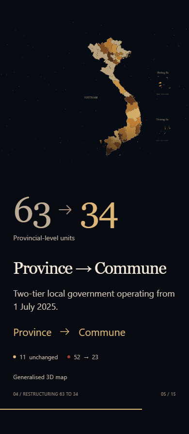
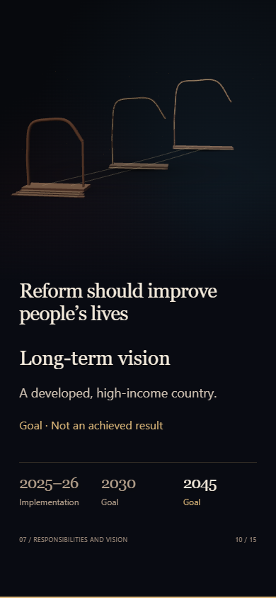

Cảnh 4: khung đầu, giữa và cuối của hiệu ứng. Chụp từng khung bằng Chromium; không phải video chuyển động liên tục.


103 kiểm tra số và danh sách 37 beat × 2 kích thước · 37 kiểm tra tương tác · 7 kiểm tra bổ sung
Đồ họa mô phỏng SwiftShader; chưa xác minh tốc độ trên GPU thật hoặc máy chiếu.